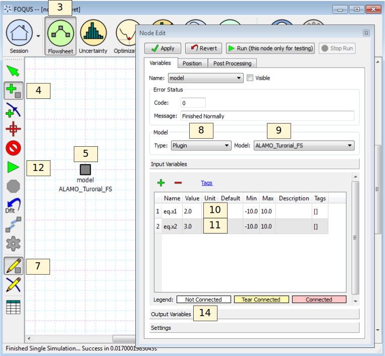

Surrogates with the Flowsheet¶
This section provides a brief tutorial for using the flowsheet plugin models generated by surrogate modeling methods. In the next FOQUS release all surrogate modeling methods will produce a model that can be run in a FOQUS flowsheet. Currently iREVEAL does not produce a flowsheet model.
Before doing this tutorial complete the ALAMO tutorial in Section[sec.surrogate.alamo].
- Open FOQUS. If FOQUS has not been closed since completing the ALAMO tutorial, close it and reopen it. There is a known issue where existing flowsheet model plugins may not update until FOQUS is restarted.
- Enter “FS_Plugin_Tutorial” as the Session Name.
- Click the Flowsheet button from the Home window.
- Click the Add Node icon in the left toolbar (see Figure [fig.pg.tut1]).
- Click a location for the node in the Flowsheet area.
- Enter “model” for the node name (without quotes).
- Click the Node Editor icon in the left toolbar (see Figure [fig.pg.tut1]).
- In the Node Editor, select “Plugin” from the Model Type drop-down list.
- Select “ALAMO_Tutorial_FS” from the Model drop-down list.
- Set the Value of the Input Variables “eq.x1” to 2.
- Set the Value of the Input Variables “eq.x2” to 3.
- Click the Run icon in the left toolbar (see Figure [fig.pg.tut1]).
- Wait for the Flowsheet evaluation to complete. It should finish successfully.
- Check the value of the Output Variables; the approximate values should be z1 = 5 and z2 = 13.

Plugin Flowsheet